Anleitung für die Vereine des Kreisschützenverbandes Fallingbostel
Im KM-Portal melden die Vereine ihre Starter zur Kreisverbandsmeisterschaft: Schützen erfassen, Disziplinen wählen, Mannschaften bilden, Meldung einreichen und später den Startplatz buchen. Das Portal prüft dabei automatisch das Startrecht, die Klasse und das Startgeld.
Der Link ist Ihr Zugang. Bitte geben Sie ihn nur innerhalb des Vereins weiter, zum Beispiel an Ihren Sportleiter. Wer den Link hat, kann die Meldung Ihres Vereins sehen und ändern. Der Link gilt bis zum Abschluss des Sportjahres.
Der KSV verschickt vor Beginn der Meldephase an jeden Verein eine E-Mail mit einem persönlichen Zugangslink. Ein Klick auf diesen Link öffnet direkt die Meldeseite Ihres Vereins. Sie bleiben angemeldet, bis Sie sich abmelden.
Rufen Sie die Seite Zugangslink anfordern auf und geben Sie eine E-Mail-Adresse ein, die beim KSV für Ihren Verein hinterlegt ist. Sie erhalten dann einen neuen Link. Aus Sicherheitsgründen bekommen Sie immer dieselbe Rückmeldung, auch wenn die Adresse nicht hinterlegt ist.
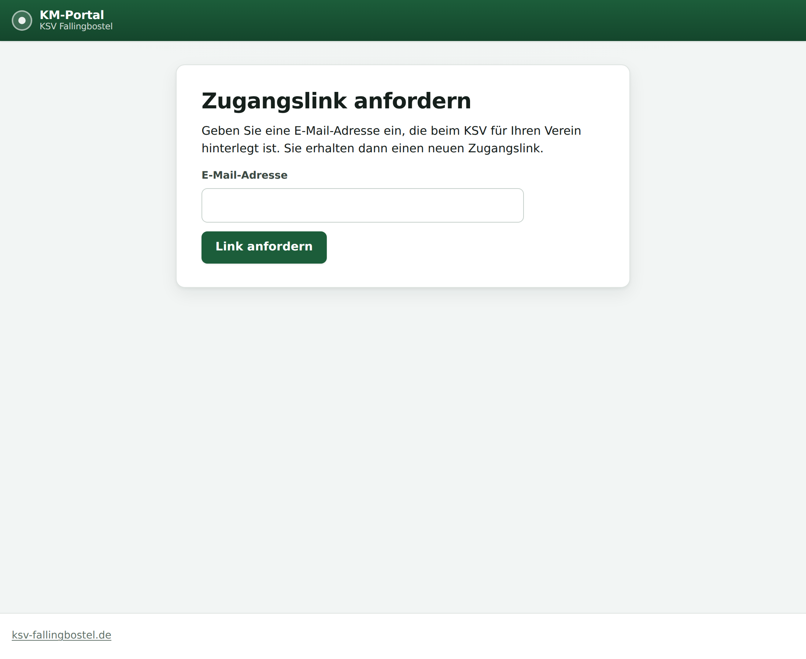
Prüfen Sie auch den Spam-Ordner. Kommt keine Mail an, ist vermutlich keine Adresse Ihres Vereins beim KSV hinterlegt. Melden Sie sich dann bitte beim KSV.
Unter 1 Schützen pflegen Sie die Personen Ihres Vereins. Diese Liste bleibt über die Jahre erhalten, Sie müssen sie also nur einmal aufbauen und in den Folgejahren ergänzen.
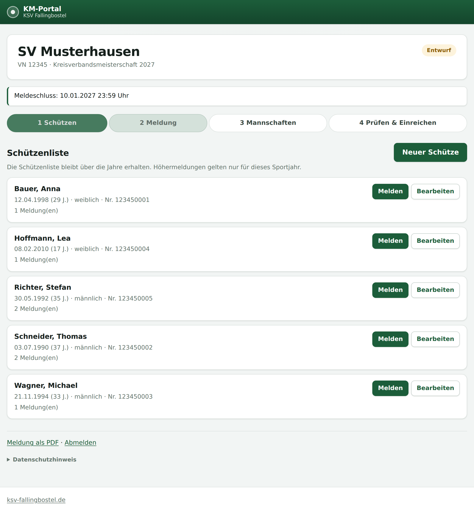
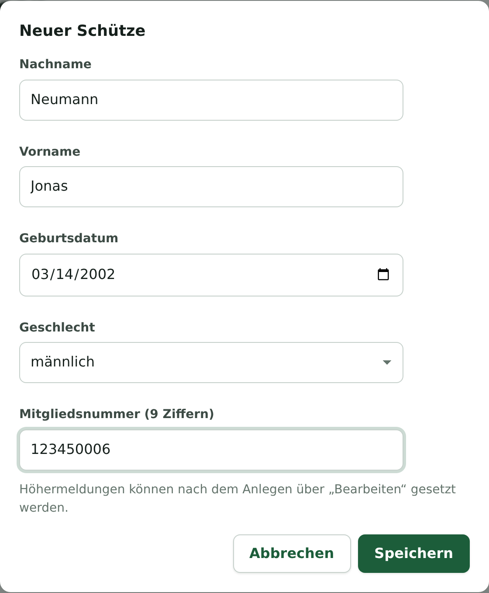
Die Mitgliedsnummer hat genau neun Ziffern und beginnt in der Regel mit der Vereinsnummer. Weicht sie ab, weist das Portal Sie darauf hin, speichert aber trotzdem.
Soll ein Schütze in einer höheren Klasse starten, als es sein Jahrgang vorsieht, tragen Sie das beim Schützen unter Bearbeiten ein. Die Höhermeldung gilt für das laufende Sportjahr und wird bei allen Meldungen dieses Schützen berücksichtigt.
Unter 2 Meldung wählen Sie oben einen Schützen aus. Das Portal zeigt dann alle Disziplinen, in denen dieser Schütze starten darf, gruppiert nach Gewehr, Pistole, Flinte und so weiter.
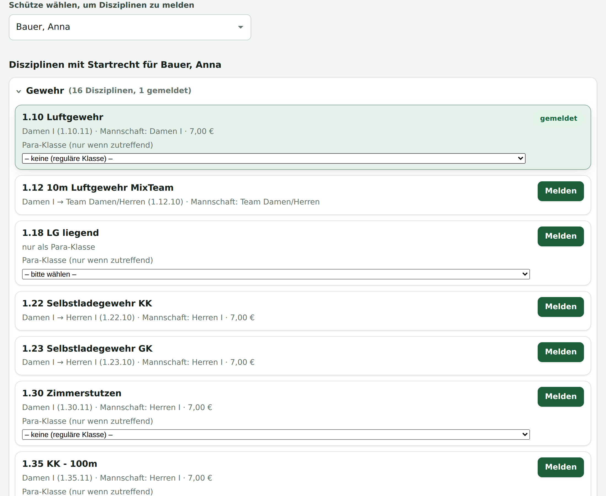
Zu jeder Disziplin sehen Sie die Startklasse, in Klammern die vollständige Kennzahl, dazu die Mannschaftsklasse und das Startgeld. Ein Klick auf Melden genügt. Bereits gemeldete Disziplinen sind grün mit dem Vermerk gemeldet markiert.
Para-Klassen: Wo eine Para-Klasse möglich ist, können Sie sie vor dem Melden im Auswahlfeld angeben. Bei Disziplinen, die es nur als Para-Wertung gibt, ist die Auswahl Pflicht.
In der Tabelle der gemeldeten Starter tragen Sie je Meldung das Ergebnis Ihrer Vereinsmeisterschaft ein. Es wird sofort gespeichert; Sie müssen nichts bestätigen.
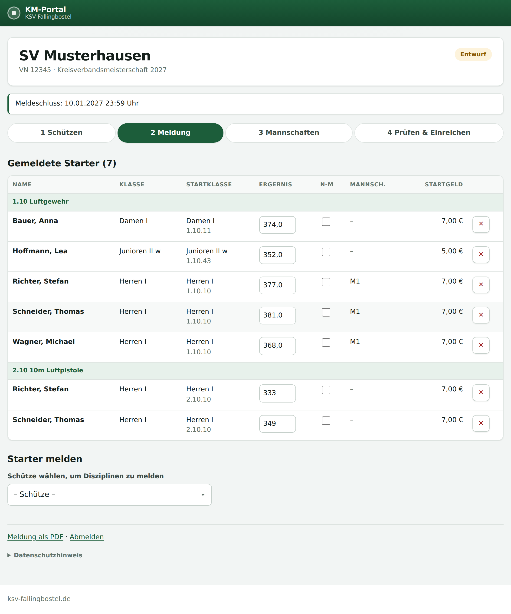
| Spalte | Bedeutung |
|---|---|
| Klasse | Die Klasse laut Jahrgang, mit dem Vermerk HM bei einer Höhermeldung. |
| Startklasse | Die Klasse, in der tatsächlich gewertet wird, darunter die Kennzahl für den Ergebnisdienst. |
| Ergebnis | Das Ergebnis der Vereinsmeisterschaft. Je nach Disziplin ganze Ringe oder Zehntel. |
| Mannsch. | Die Mannschaft, in der dieser Start gewertet wird. |
| Startgeld | Das Startgeld für diesen Start. Die Summe sehen Sie unter Prüfen und Einreichen. |
Das Meldeergebnis wird für die Startplanung gebraucht. Fehlt es, weist das Portal Sie darauf hin. Einreichen können Sie trotzdem.
Unter 3 Mannschaften stellen Sie Mannschaften aus den bereits gemeldeten Startern zusammen. Angeboten werden nur Schützen, die in dieselbe Mannschaftsklasse gehören.
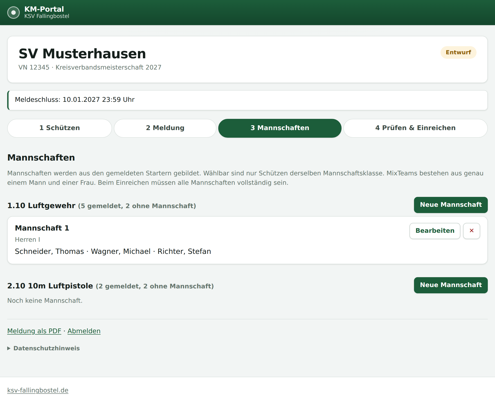
Beim Einreichen müssen alle Mannschaften vollständig sein. Eine Mannschaft, die Sie doch nicht melden wollen, können Sie einfach wieder auflösen.
Unter 4 Prüfen & Einreichen hinterlegen Sie zuerst den Ansprechpartner. Das ist in der Regel der Sportleiter, der die Meldung erstellt. Er erhält alle weiteren Mails zur Meldung.
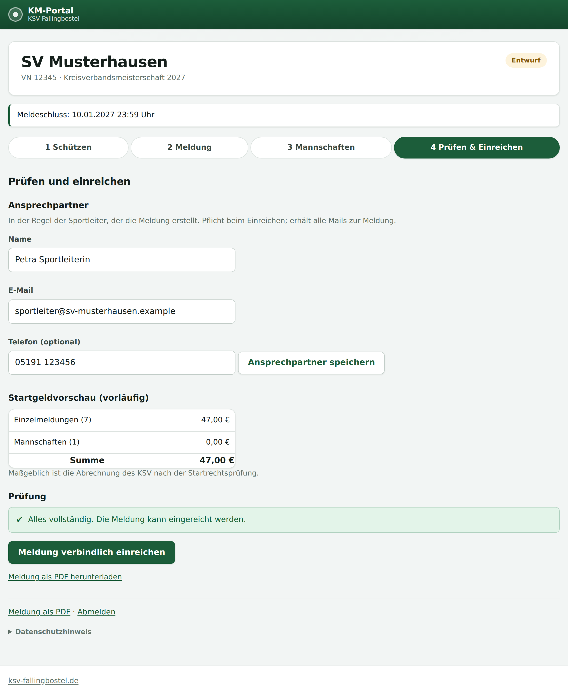
Darunter sehen Sie die Startgeldvorschau und die Prüfung. Rote Meldungen verhindern das Einreichen, gelbe sind Hinweise. Ist alles in Ordnung, reichen Sie die Meldung mit einem Klick verbindlich ein.
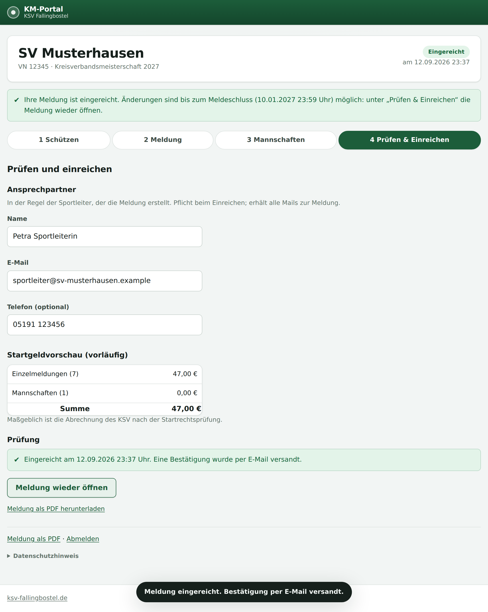
Änderungen nach dem Einreichen: Bis zum Meldeschluss können Sie die Meldung jederzeit wieder öffnen, ändern und erneut einreichen. Den Knopf dafür finden Sie auf derselben Seite.
Sobald der KSV den Startplan eines Wettkampftags freigibt, erhalten Sie eine E-Mail, und im Portal erscheint der Reiter 5 Startplätze. Dort buchen Sie für jeden Starter einen Platz.
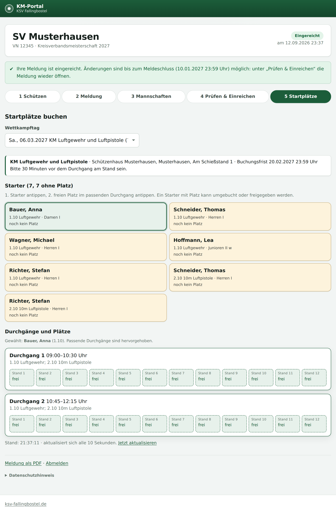
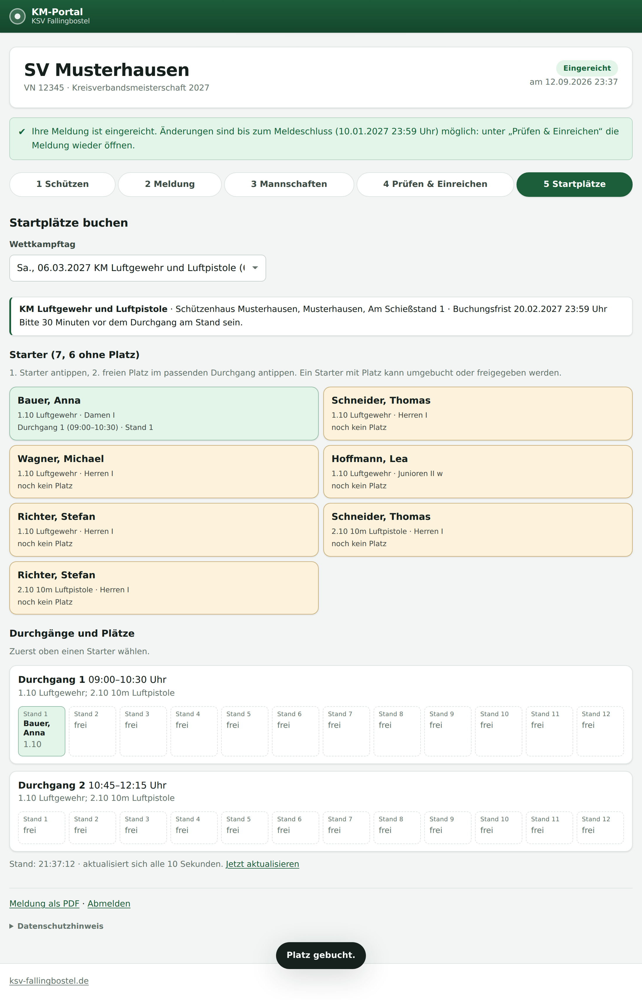
Einen Starter mit Platz können Sie erneut antippen und auf einen anderen freien Platz setzen. Über Platz freigeben geben Sie den Platz wieder frei. Beides ist bis zur Buchungsfrist möglich.
Gleichzeitige Buchungen: Alle Vereine buchen im selben Raster. Ist ein anderer Verein einen Augenblick schneller, scheitert nur dieser eine Klick, und Sie wählen einen anderen Platz. Ihre übrigen Buchungen bleiben bestehen. Das Raster aktualisiert sich alle paar Sekunden von selbst.
Ein Schütze kann nicht in zwei Durchgängen stehen, die sich zeitlich überschneiden, auch nicht in verschiedenen Disziplinen. Das Portal weist Sie darauf hin.
Nach der Buchungsfrist verteilt der KSV die restlichen Starter auf freie Plätze und veröffentlicht den Startplan.
Mit dem Meldeschluss wird die Meldung schreibgeschützt. Das Portal bleibt weiter zugänglich: Sie sehen Ihre Meldung, den Prüfstatus jedes Starters und später den Startplan.
| Anliegen | Weg |
|---|---|
| Starter nachmelden | Beim KSV melden. Der KSV trägt die Nachmeldung ein oder schaltet Ihren Verein befristet wieder frei. |
| Starter abmelden | Beim KSV melden. Über das Startgeld entscheidet der KSV. |
| Ergebnis korrigieren | Beim KSV melden. |
Alle Änderungen, die der KSV an Ihrer Meldung vornimmt, sammelt das Portal und schickt sie Ihnen einmal täglich als Übersicht per E-Mail.
Nach dem Meldeschluss prüft der KSV die Startrechte. In der Spalte Status sehen Sie das Ergebnis:
Nein. Das Portal ist für Handy, Tablet und Computer gemacht. Am Handy werden die Tabellen als Karten dargestellt.
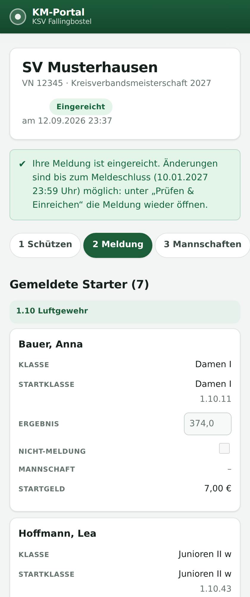
Ja. Der Zugangslink kann innerhalb des Vereins weitergegeben werden. Alle arbeiten an derselben Meldung, Änderungen sind sofort für alle sichtbar.
Er muss zuerst in derselben Disziplin gemeldet sein und in dieselbe Mannschaftsklasse gehören. Prüfen Sie Jahrgang und Geschlecht sowie eine eventuelle Höhermeldung.
Maßgeblich ist die Startklasse, nicht der Jahrgang. Ein Junior, der bei den Herren startet, zahlt den Erwachsenentarif. Die endgültige Abrechnung erstellt der KSV nach der Startrechtsprüfung.
Bis zum Abschluss des Sportjahres. Fordert jemand einen neuen Link an, bleibt der alte gültig, solange der KSV ihn nicht ausdrücklich ersetzt.
Die Daten werden ausschließlich für die Kreisverbandsmeisterschaft verarbeitet: Startrechtsprüfung, Klasseneinteilung, Startplanung, Ergebnisdienst und Abrechnung. Mit der Veröffentlichung des Startplans werden Name, Vorname, Verein, Startklasse, Stand und Uhrzeit auf der Website des KSV veröffentlicht. Nach Abschluss des Sportjahres werden die persönlichen Daten aus den Meldungen entfernt. Den vollständigen Hinweis finden Sie im Portal unten auf der Seite.
Fragen zur Meldung oder zum Zugang beantwortet der Kreisschützenverband Fallingbostel. Diese Anleitung bezieht sich auf das KM-Portal in der Version 0.9.0. Die abgebildeten Namen und Ergebnisse sind Musterdaten.